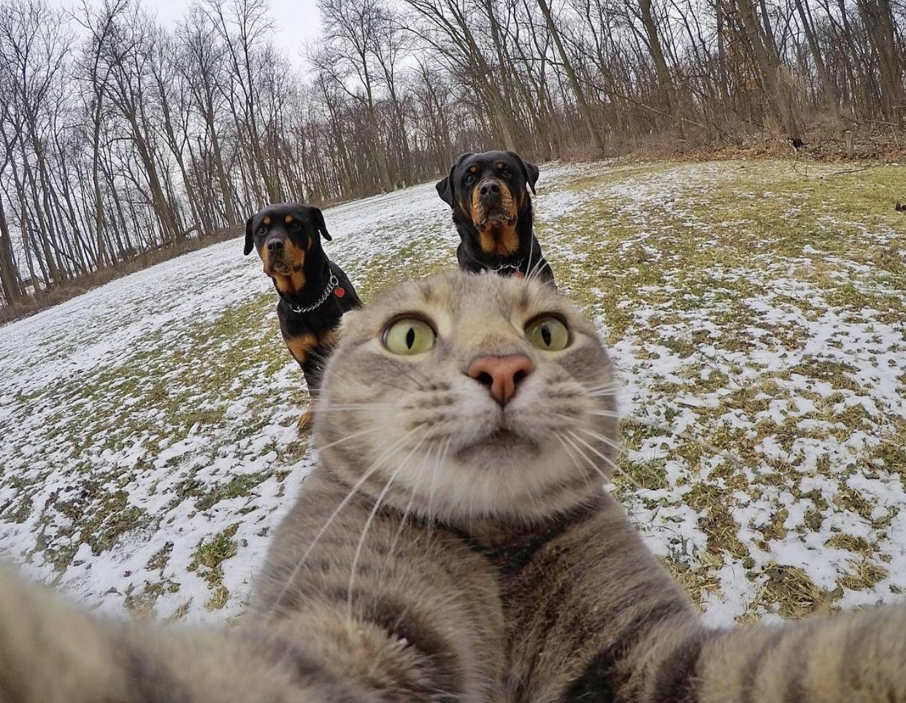

Favorite Cat Photos
With a mix of both cut and funny photos, I present to you a compilation of some of my favorite cat photos. The collage includes pictures of my own along with pictures from @loveyoustepan and @yoremahm on Instagram.
